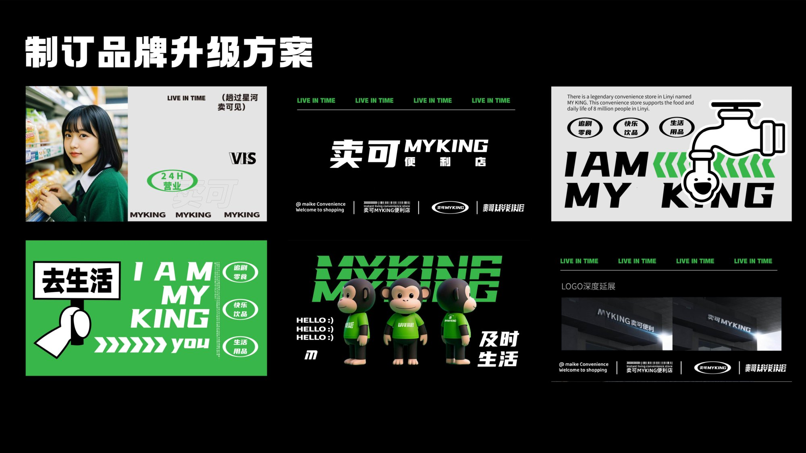

works / myking
卖可 MYKING
MYKING 便利店品牌升级 · VI 延展与春日「轻甜季」营销物料
卖可 MYKING 便利店品牌升级：从门店店招、加盟宣传到 LIVEINTIME 闲饮琅琊小酒馆副线，完成 VI 延展与「IAM MY KING / 去生活」的品牌人格化表达；并同步输出 3 月春日「轻甜季」线上营销物料，以插画海报与手机端推广覆盖青团 CP、酸奶治愈力、樱花季限定补给站等主题。

门店店招与 VI 升级 / Storefront & VI Renewal
集中展示 MYKING 卖可便利店门店店招、加盟宣传与杯饮产品线的 VI 升级应用；副线 LIVEINTIME 闲饮琅琊以「LIVE IN TIME」建立小酒馆氛围识别。

品牌人格化：IAM MY KING / Brand Character & Extensions
以绿色主色调与品牌卡通 IP 强化「IAM MY KING / 去生活」的生活方式主张，配套主题文化包等延展物料，让便利店品牌拥有鲜明人格与话题性。

春日「轻甜季」营销物料 / Spring Campaign Materials
3 月春日营销以插画海报与手机端界面联动，覆盖青团 CP、酸奶治愈力、樱花季限定补给站等主题，同步露出招聘、会员、加盟与市场合作入口。